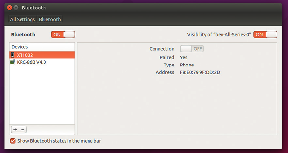
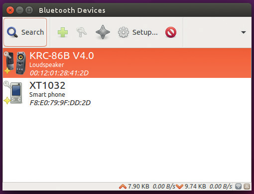
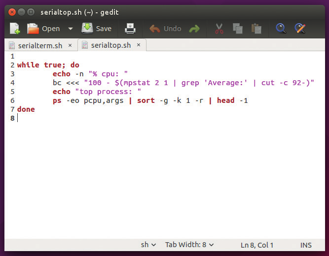
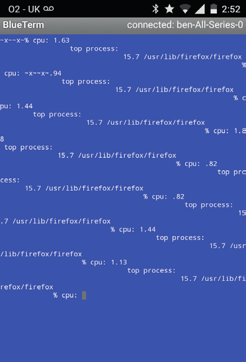
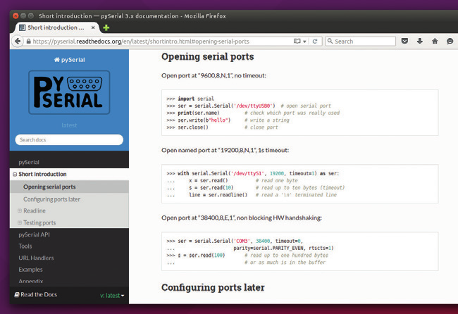

Осуществляем мониторинг параметров компьютера путем организации беспроводного соединения с мобильным телефоном.
Для чего это нужно?
Bluetooth-адаптеры установлены практически во всех смартфонах, в большинстве ноутбуков и в некоторых настольных компьютерах, но при этом они редко используются для чего-либо, кроме отправки аудиопотока на беспроводные наушники или колонки. И это очень огорчает, ведь данная технология является достаточно функциональной для передачи любых данных между любыми устройствами и предоставляет неограниченные возможности для создания различных программных продуктов.
В данном руководстве я попытаюсь рассмотреть методику использования стандартных инструментов из состава Linux для передачи информации о состоянии вашего компьютера в реальном времени на ваш мобильный телефон, который будет выступать в качестве дополнительного мобильного экрана для мониторинга состояния вашего компьютера. Мы будем использовать для этой цели протокол Bluetooth, позволяющий создать виртуальный последовательный порт для обмена данными между мобильным телефоном и компьютером, работающим под управлением Linux. Последовательные порты гармонично сочетаются с парадигмой Unix, в соответствии с которой "все является файлом", ведь они представлены файлами в директории /dev, причем вы можете как записывать в них данные (для передачи информации), так и читать данные из них (для приема информации). Благодаря подобной особенности вы можете использовать обычные инструменты с интерфейсом командной строки для организации процесса обмена данными между устройствами.
Перед тем, как приступить к работе, нам придется установить и настроить необходимое программное обеспечение. В первую очередь следует найти приложение для работы с Bluetooth для вашего Android-телефона. На данный момент доступно несколько подобных приложений. Лучшим из них является приложение с открытым исходным кодом Bluetooth Terminal, которое доступно из F-Droid по адресу https://f-droid.org/repository/browse/?fdid=ru.sash0k.bluetooth_terminal. Если вы предпочитаете использовать магазин приложений Google Play, вы можете установить приложение BlueTerm от разработчика pymasde.es.

Сопряжение устройств в терминологии Bluetooth - это процесс согласования работы двух устройств путем установки соединения между ними. Оно должно осуществляться однократно для каждой комбинации устройств.
На стороне компьютера, работающего под управлением Linux, также понадобится дополнительное программное обеспечение, которое, впрочем, может быть уже установлено. В список данного программного обеспечения должно входить как приложение для организации соединения между мобильным телефоном и компьютером, так и программное обеспечение для передачи данных через последовательный порт. Для организации соединения между двумя машинами (или сопряжения в терминологии Bluetooth) вы можете воспользоваться приложением с графическим интерфейсом из состава окружения вашего рабочего стола. В GNOME данное приложение носит имя Gnome Bluetooth Manager, в KDE — Blue Devil, а в Unity — элемент Bluetooth панели параметров системы Ubuntu. Процесс сопряжения устройств в случае использования каждого из упомянутых приложений осуществляется аналогичным образом.
В первую очередь вам придется убедиться в том, что в вашем мобильном телефоне активирована поддержка Bluetooth и название телефона присутствует в списке устройств. Для ее активации достаточно перейти на страницу Bluetooth приложения для изменения настроек (для того, чтобы мобильный телефон обнаруживался другими устройствами, следует держать эту страницу открытой). После открытия соответствующей страницы и активации поддержки Bluetooth на уровне мобильного телефона следует открыть окно приложения для работы с устройствами Bluetooth на компьютере, работающем под управлением Linux, убедиться в том, что поддержка Bluetooth активирована, после чего выбрать название мобильного телефона из списка и воспользоваться соответствующим переключателем для установления соединения. В результате будет инициирован процесс сопряжения вашего мобильного телефона с компьютером. Вам останется лишь четко следовать выводимым приложением инструкциям для корректного завершения процесса сопряжения.
По сути, процесс сопряжения является процессом установления соединения общего назначения между двумя устройствами, которое, в свою очередь, может использоваться для установления специализированных соединений для передачи аудиопотоков, отправки файлов или потоков данных. Для того, чтобы получить возможность передачи произвольных данных нам придется создать соединение по виртуальному последовательному порту. Процесс его создания может быть разделен на два этапа, причем на первом этапе нам придется создать виртуальный последовательный порт на уровне компьютера, а на втором — соединить этот порт с мобильным телефоном. Для этого нам придется воспользоваться утилитой rfcomm, которая может уже присутствовать в вашей системе, но если это не так, вы всегда можете установить ее с помощью менеджера пакетов программного обеспечения вашего дистрибутива (в системах, основанных на Debian она находится в пакете bluez).
Из-за определенных недоработок утилита rfcomm может корректно работать лишь в случае запуска от лица пользователя root, поэтому нам придется выполнять большое количество команд от лица этого пользователя. Команда для создания нового виртуального последовательного порта для Bluetooth-адаптера выглядит следующим образом:
sudo rfcomm listen 0
Теперь ваш компьютер будет принимать соединения, поэтому вам придется лишь соединиться с ним с помощью мобильного телефона, выбрав доступное соединение (это не должно быть связано с какими-либо сложностями, ведь устройства уже сопряжены). По сути, вам придется открыть приложение Bluetooth-терминала на мобильном телефоне и выбрать элемент, соответствующий компьютеру, из списка на странице параметров соединений. В результате на стороне вашего компьютера будет создан файл устройства /dev/rfcomm0 (вы можете создать более одного виртуального последовательного Bluetooth-порта, увеличивая значение числового аргумента утилиты rfcomm, в результате чего будут создаваться файлы устройств /dev/rfcomm1, /dev/rfcomm2 и так далее).
Любая информация, которую вы запишите в этот файл устройства, будет передаваться в Bluetooth-терминал на мобильном телефоне, поэтому вы можете прямо сейчас протестировать соединение с помощью следующей команды:
sudo bash -c 'echo "hello world" > /dev/rfcomm0'
Команда echo выводит текст "hello world", причем символ "больше" сообщает командной оболочке о том, что вместо вывода следует отправить его в файл устройства /dev/rfcomm0 (соответствующий нашему последовательному соединению). Данная команда является немного более запутанной, чем обычная команда sudo, так как нам нужно осуществлять перенаправление вывода утилиты от лица пользователя root. Если бы мы выполнили данную команду, использовав лишь префикс sudo, она бы просто не сработала:
sudo echo "hello world" > /dev/rfcomm0
В данном случае команда echo исполняется от лица пользователя root, но перенаправление вывода (> /dev/rfcomm0) осуществляется от лица обычного пользователя. Вместо этого мы используем команду sudo для запуска новой сессии командной оболочки Bash от лица пользователя root, после чего осуществляем вызов утилиты echo и перенаправление ее вывода в рамках этой сессии. В первом варианте команды мы используем команду bash -c для открытия новой сессии командной оболочки.
Существует и более простое решение данной проблемы: утилита tee. Эта утилита принимает данные с помощью стандартного потока ввода и выполняет две операции. Во-первых, она записывает полученные данные в файл, а во-вторых, передает их же в стандартный поток вывода. Так как файл создается и заполняется силами самой утилиты, мы можем использовать лишь команду sudo для ее запуска от лица пользователя root. Таким образом, приведенная выше команда может быть приведена к следующей форме:
echo "hello world" | sudo tee /dev/rfcomm0
Да, использование компьютера в качестве Bluetooth-колонки является не самым оптимальным решением в финансовом плане, но бывают случаи, когда это может оказаться полезным. Возможно, у вас установлен медиа-центр и вы хотите проигрывать с помощью него музыку с вашего мобильного телефона. Возможно, вам просто нужно в текущий момент проиграть музыку через колонки вашего компьютера. Вне зависимости от причины, методика проигрывания музыки является довольно простой. В первую очередь вам придется провести сопряжение мобильного телефона и компьютера таким образом, как описано выше. После окончания процесса сопряжения вам придется сообщить компьютеру о том, что соединение будет использоваться для передачи аудиоданных. В приложении с графическим интерфейсом для управления устройствами Bluetooth под названием Blueman для этого достаточно выбрать соединение, воспользоваться правой кнопкой мыши и выбрать из открывшегося контекстного меню пункт "Audio Source". После этого аудиопоток с мобильного телефона будет проигрываться на компьютере.

Blueman является небольшим приложением для работы с устройствами Bluetooth, более функциональным, чем диалог настроек устройств Bluetooth окружения рабочего стола Unity, поэтому оно может пригодиться пользователям дистрибутива Ubuntu, которым нужно осуществлять передачу аудиопотоков или файлов между устройствами.
Так как команда tee перенаправляет переданные в ее стандартный поток ввода данные как в свой стандартный поток вывода, так и в файл, вы должны увидеть строку "hello world" как в терминале Linux, так и в Blutooth-терминале на мобильном телефоне. Это первый вариант механизма мониторинга состояния компьютера с помощью мобильного телефона. Он может оказаться полезным в том случае, если вы запустите долго исполняющуюся команду и захотите покинуть рабочее место до момента окончания ее исполнения. Вам придется лишь перенаправить стандартный поток вывода данной команды с помощью программного канала в стандартный поток ввода команды sudo tee /dev/rfcomm0, после чего вы сможете покинуть свое рабочее место и наблюдать за исполнением команды с помощью Bluetooth-терминала, установленного на вашем мобильном телефоне.
Но данный подход имеет один серьезный недостаток: в том случае, если команда не выводит каких-либо данных, вы не сможете отследить момент окончания ее исполнения. Вы можете исправить его выполнив сразу же после этой команды еще одну команду, воспользовавшись точкой с запятой. Например, следующая составная команда позволяет обновить систему Debian (с отправкой вывода как в терминал, так и на мобильный телефон) и вывести слово "finished" после окончания процесса обновления:
sudo apt-get upgrade | sudo tee /dev/rfcomm0 ; echo "finished" | sudo tee /dev/rfcomm0
До текущего момента мы использовали наш виртуальный последовательный порт Bluetooth лишь в качестве канала для отправки данных, но не получали каких-либо данных из него. Если вы разберетесь с функциями приложения, установленного на мобильном телефоне, вы обнаружите, что оно позволяет отправлять текстовые строки, но все отправляемые таким образом данные все равно будут потеряны из-за особенностей методики работы с соединением, используемой нами до данного момента (приведенные выше команды позволяют осуществлять запись данных в файл устройства, но не их чтение).
Простейший способ чтения отправленных данных заключается в использовании утилиты tail. Она предназначена для вывода последних строк из файла, но в случае использования флага -f (follow — следовать), она будет постоянно отслеживать содержимое файла и выводить все строки, которые были дописаны в конец этого файла. Обычно данная утилита используется для мониторинга операций добавления строк в файлы журналов, но она вполне подойдет и для наших целей. Так как нам нужно выводить содержимое всего файла, а не его последние строки, нам также придется использовать аргумент -n + 1, сообщающий утилите tail о том, что следует выводить все строки файла начиная с первой. Команда для приема текстовых сообщений, отправляемых с мобильного телефона на компьютер, будет выглядеть следующим образом:
sudo tail -fn +1 /dev/rfcomm0
Сама по себе эта команда является не особо полезной, так как она позволяет нам лишь принимать на компьютере текст, отправленный с мобильного телефона. В принципе, вы можете создать примитивную систему обмена сообщениями, используя команду echo для отправки сообщений и команду tail для их приема, но это тоже не самый удобный вариант.

Нескольких строк кода сценария командной оболочки Bash вполне достаточно для отправки диагностической информации на ваш мобильный телефон.
К счастью, мы можем не ограничиваться выводом текста на экран. Вместо этого мы можем передавать текстовые данные другим командам. Простейший способ реализации подобного механизма заключается в чтении данных из файла устройства /dev/rfcomm0, обработке их средствами командной оболочки Bash и записи результирующих данных в этот же файл устройства. Для этой цели может использоваться следующий сценарий:
while read -r line < /dev/rfcomm0; do
$line > /dev/rfcomm0
done
В нем используется команда read для последовательного чтения строк из файла устройства виртуального последовательного порта. В первой строке открывается цикл while, который продолжает работу до момента отправки символа окончания файла, а так как этот символ не возвращается при чтении данных из файла устройства виртуального последовательного порта (да, при чтении данных из таких файлов никогда не возвращается символ окончания файла, так как при отсутствии данных операция чтения попросту блокируется), данный цикл будет работать до момента закрытия виртуального последовательного порта. Во второй строке осуществляется обработка прочитанной текстовой строки средствами командной оболочки и запись этой строки в файл устройства виртуального последовательного порта. Если вы сохраните данный код в файле с именем serialterm.sh, вы сможете запустить данный сценарий следующим образом:
sudo bash -c "bash serialterm.sh 2> /dev/rfcomm0"
Последняя часть команды (2> /dev/rfcomm0) необходима для перенаправления стандартного потока ошибок создаваемого процесса командной оболочки в устройство виртуального последовательного порта. Следует использовать этот сценарий с особой осмотрительностью, так как он позволяет использовать командную оболочку, запущенную от имени пользователя root, на вашем мобильном телефоне (хотя доступ к ней и ограничен областью действия адаптеров Bluetooth).
Протокол Bluetooth описан в рамках множества спецификаций, созданных специальной группой по разработке протокола Bluetooth (Bluetooth Special Interest Group или Blutooth SIG). Эта специальная группа была сформирована 20 мая 1998 года и по сей день продолжает работу над протоколом по мере развития технологий, так как изменение технологического ландшафта требует своевременной модификации спецификаций протокола. В последнюю версию протокола (Bluetooth 4) была включена новая спецификация для устройств с низким энергопотреблением, использующих аккумуляторы малой емкости, причем сама версия протокола разрабатывалась с учетом особенностей концепции "интернета вещей". Кроме того, существует версия протокола для устройств, для которых скорость передачи данных важнее, чем энергопотребление (высокоскоростная версия Bluetooth), позволяющая передавать данные на скорости до 24 Мб/с. Описанные нововведения позволяют сохранять актуальность протокола, несмотря на его более чем 15-летний возраст.

Некоторые приложения для мобильных телефонов, реализующие терминалы для последовательных соединений по протоколу Bluetooth, ожидают строки с окончаниями в стиле Windows и могут осуществлять не совсем корректное форматирование вывода в случае приема строк с окончаниями в стиле Linux. Тем не менее, это обстоятельство никоим образом не влияет на содержимое принимаемых строк.
Простейший способ отправки файлов через Bluetooth заключается в использовании протокола ObexFTP. Возможно, вам придется установить дополнительное программное обеспечение для того, чтобы воспользоваться данным протоколом. На вашем мобильном телефоне должно быть установлено приложение, работающее с этим протоколом, причем в магазине приложений Google Play несложно найти сразу несколько таких приложений. Мы использовали приложение под названием Bluetooth File Transfer, но другие аналогичные приложения также должны отлично работать. На вашей машине, работающей под управлением Linux, также должно присутствовать приложение, способное осуществлять взаимодействие с приложением на стороне мобильного телефона.
Большинство приложений с графическим интерфейсом для работы с Bluetooth позволяет передавать файлы, но в некоторых случаях вам может потребоваться интегрировать механизм передачи файлов в собственные сценарии командной оболочки. Например, вы можете создать сценарий командной оболочки, который будет исполняться в определенное время раз в день (когда вы находитесь на рабочем месте) и создавать резервную копию файлов с вашего мобильного телефона.
В репозиториях программного обеспечения большинства дистрибутивов Linux присутствует утилита с интерфейсом командной строки с именем ObexFTP. Вы можете использовать ее для получения списка всех файлов на вашем мобильном телефоне на стороне компьютера с помощью следующей команды:
obexftp -b -l
Список файлов будет представлен в не самом очевидном формате XML, но вы в любом случае без труда сможете найти их имена. А это команда для загрузки отдельного файла:
obexftp -c <директория> -g <файл>
На веб-сайте проекта, по адресу http://dev.zuckschwerdt.org/openobex/wiki/ObexFtp, присутствуют примеры кода, а также сложных команд на основе данной утилиты.
Одним из полезных применений соединения, организованного посредством виртуального последовательного порта по протоколу Bluetooth, является мониторинг нагрузки на центральный процессор компьютера при отсутствии возможности получения аналогичной информации посредством экрана монитора компьютера. Такая ситуация может возникнуть, к примеру, при использовании полноэкранных приложений с графическим интерфейсом. Вы можете просто перенаправить вывод утилиты top в связанный с мобильным телефоном файл устройства виртуального последовательного порта, но из-за различий в размерах экранов устройств чтение вывода утилиты top на экране мобильного телефона будет затруднено. Вместо этого мы самостоятельно создадим упрощенный аналог утилиты top, который будет выводить лишь информацию о нагрузке на центральный процессор компьютера, а также имя процесса, который наиболее интенсивно использует его ресурсы.
Для реализации аналога утилиты top мы будем использовать утилиту mpstat, которая выводит информацию о нагрузке на центральный процессор, а также утилиту ps, которая выводит информацию о процессах, наиболее интенсивно использующих центральный процессор. Сценарий выглядит следующим образом:
while true; do
echo -n "% cpu: "
bc <<< "100 - $(mpstat 2 1 | grep 'Average:' | cut -c 92-)"
echo "top process: "
ps -eo pcpu,args | sort -g -k 1 -r | head -1
done
Утилита grep в третьей строке используется для извлечения единственной строки, содержащей информацию о средней нагрузке на центральный процессор, из вывода утилиты mpstat, после чего утилита cut используется для непосредственного извлечения процентных показателей времени бездействия центрального процессора. Утилита bc по своей сути является простейшим калькулятором, с помощью которого мы вычитаем полученный процентный показатель бездействия центрального процессора из 100 процентов, вычисляя таким образом процентный показатель нагрузки на центральный процессор.
Выводимая утилитой ps информация о нагрузке на центральный процессор, создаваемой отдельными процессами, передается с помощью программного канала сначала на вход утилиты sort (флаг -g позволяет осуществлять сортировку по числовым значениям), а затем — на вход утилиты head для получения первой строки с информацией о процессе, наиболее интенсивно использующем ресурсы центрального процессора.
Существует небольшое различие между информацией, выводимой обоими упомянутыми утилитами. mpstat периодически рассчитывает нагрузку на центральный процессор через непродолжительные промежутки времени (в нашем случае длительностью в 2 секунды), в то время, как утилита ps рассчитывает среднюю нагрузку на центральный процессор в течение времени жизни процесса.
Для передачи описанных данных на ваш мобильный телефон вы можете перенаправить стандартный поток вывода сценария в файл устройства виртуального последовательного порта таким же образом, как это делалось ранее. Если вы сохраните сценарий под именем serialtop.sh, команда будет выглядеть следующим образом:
sudo bash -c "bash serialtop.sh > /dev/rfcomm0"
После выполнения этой команды все выводимые сценарием данные будут передаваться непосредственно на ваш мобильный телефон и вы сможете следить за нагрузкой на центральный процессор вашего компьютера даже в том случае, если экран его монитора будет занят окнами других программ.

Для большинства современных языков программирования, включая Python, имеются библиотеки, позволяющие работать с последовательными соединениями и полностью контролировать процесс передачи данных через эти соединения.
Разумеется, в статье описано лишь несколько примеров использования последовательных соединений по протоколу Bluetooth, установленных между мобильным телефоном и компьютером. Если вы желаете развить данную идею, вы можете проработать вопрос организации последовательного соединения средствами вашего собственного приложения для мобильного телефона, которое будет принимать данные в определенном формате и обрабатывать их в соответствии со вашими предпочтениями. Например, вы вы можете просто принимать информацию от финального варианта нашего сценария и отображать ее в форме спидометра, указывающего, насколько быстро работает ваш компьютер в текущий момент. Последовательные соединения являются чрезвычайно гибкими и могут использоваться для различных целей, но в то же время, с ними достаточно просто работать, в чем вы могли самостоятельно убедиться.
Ben Everard, 19 сентября 2016 г.
А.Панин, 14 ноября 2016 г.